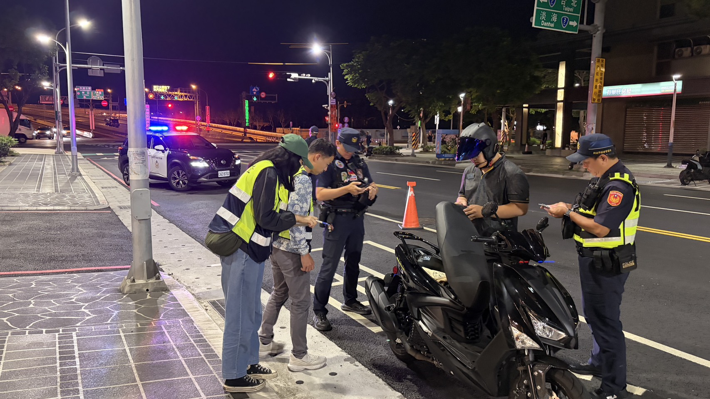
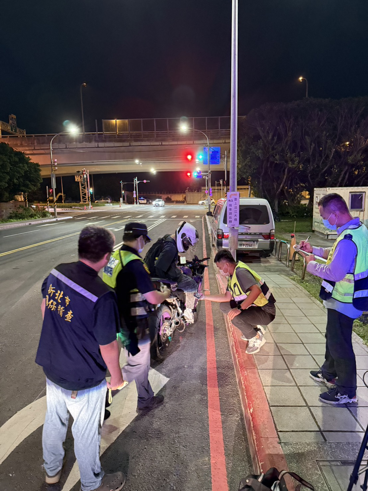
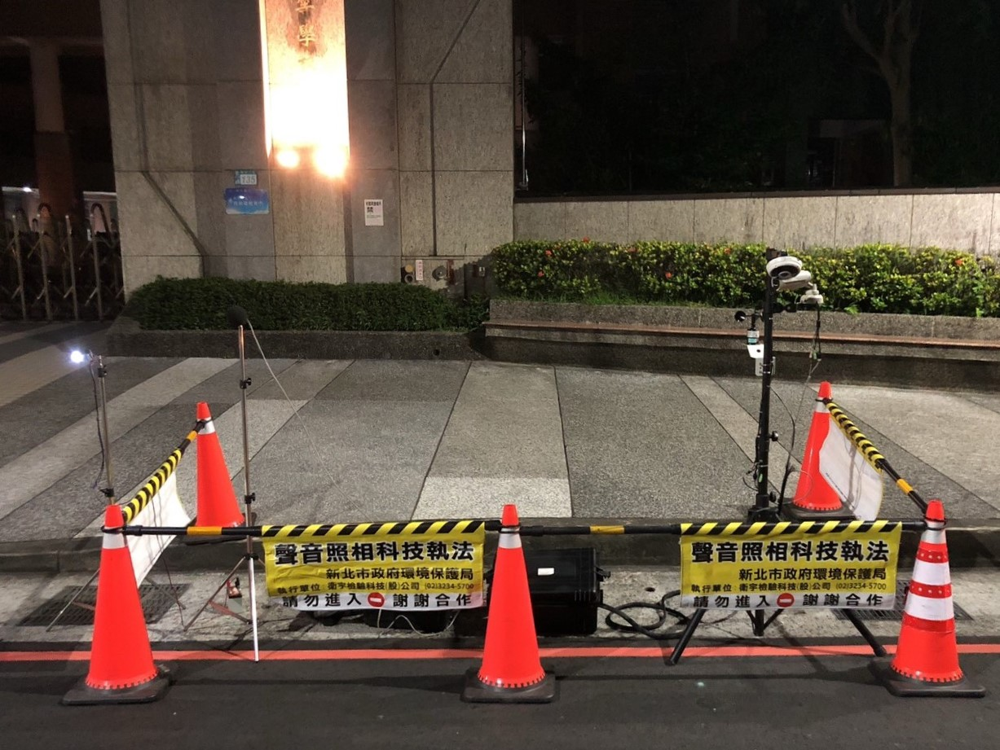
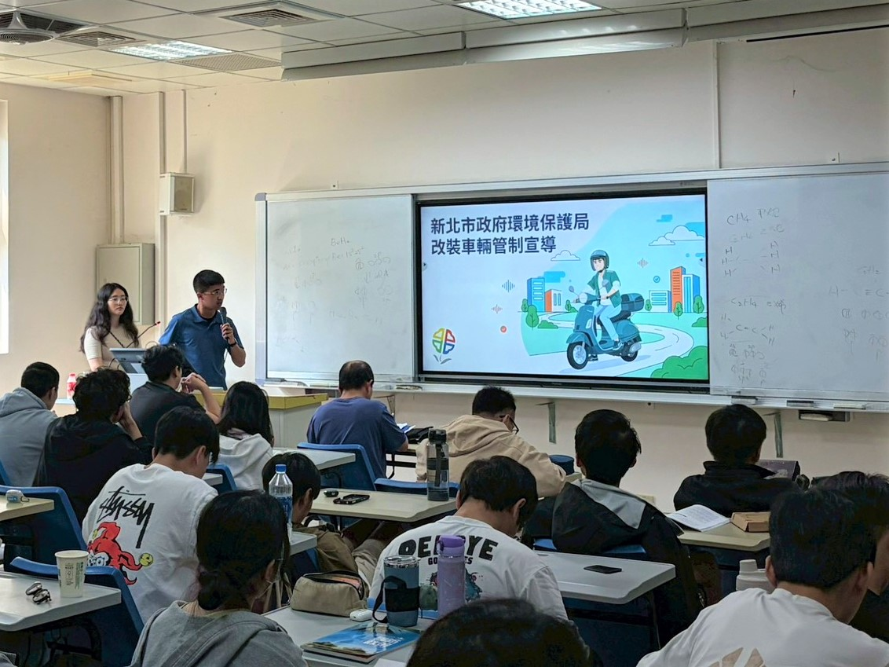

生活與近鄰聲音
例如住家周遭非持續、難以量測但足以妨害安寧的聲音，可能依噪音管制法第 6 條等規定處理。
QUIET CITY · BETTER LIFE
噪音不只來自改裝車，也可能來自施工、擴音設備、機械設備或生活周遭。 這裡用簡單方式整理新北市最新噪音管制與陳情資訊，遇到問題先判斷來源，再找對管道。
資料為新北市環保局「噪音管制介紹」列舉之生活聲音範例。
NOISE 101
是否違規，要依聲音來源、發生地點、時段、管制區別與法規標準判斷；不同類型的噪音，處理方式也不同。
例如住家周遭非持續、難以量測但足以妨害安寧的聲音，可能依噪音管制法第 6 條等規定處理。
冷氣、冷卻水塔、抽水馬達、抽排風機、發電機等特定設施，有噪音管制標準可依循。
施工除了噪音標準，也有新北市公告的夜間與例假日禁制作業時段。
包含車輛噪音檢測、排氣管認證、聲音照相科技執法及聯合攔查。
新北市環保局目前公布的環境與交通噪音監測配置。
2026 NEW TAIPEI RULES
以下整理民眾最常遇到的時段限制；完整例外與適用範圍仍以正式公告為準。
新北市各類噪音管制區內，原則上不得從事上述行為致妨害他人生活環境安寧；公告另列部分例外。
限制使用動力機械從事特定商業行為、使用發聲法器進行宗教民俗活動、使用樂器等擾寧行為。
夜間 22:00–翌日 08:00 有限制；例假日或國定假日另有 12:00–14:00 及 20:00–翌日 08:00 的管制時段與例外規定。
各類噪音管制區內，原則不得使用吹葉機從事環境清理作業致妨害安寧；災害復原、緊急救助或經核准者除外。
115 年 3 月 5 日公告重新劃定：第一類為國家公園；第二類包含都市計畫住宅區及學校用地；第三類為第一、二、四類以外地區；第四類包含工業區、臺北港區、部分產業專用區，以及快速道路、高速公路、鐵路、捷運等交通設施與 15 公尺以上其他道路。
查看正式噪音管制公告 ↗NOISY VEHICLES
新北市現行公告已針對不合格或未經審驗／檢驗合格的排氣管，採全區、無限定時段的禁止行為管制。
在新北市各類噪音管制區內，不得任意變更已經主管機關噪音檢（查）驗合格的排氣管，也不得使用未經主管機關噪音審驗或檢驗合格的排氣管行駛道路。

新北市以聲音照相科技執法設備、移動式設備及環保、警察、監理跨機關聯合攔查，針對高噪音車輛與陳情熱點加強取締。



依噪音管制法第 23 條處罰，並令立即改善；未遵行得按次處罰。
最新修法後罰鍰上限提高；情節重大、屢次違規者可移請監理機關吊扣牌照至改善。
114 年起排氣管納入車輛設備變更登記項目，違規另涉及道路交通規定。
DATA DASHBOARD
下列數字均標示統計時間，避免把不同期間的累計成果混在一起。
約 40% 22 歲以下
約 60% 其他年齡
新北市環保局 115/6/30 新聞資料：22 歲以下違規者比例由原約五成降至四成。長條僅做相對視覺呈現，各項單位不同，不代表同一統計母體。
REPORT & COMPLAINT
先分成「噪音車」和「一般環境噪音」，使用正確管道會更容易處理。
發現明顯噪音車後，應於 30 日內提出檢舉，並提供完整資料。
施工、設備、場所或其他環境公害，可使用新北市環保局陳情管道。
FAQ
先用簡單答案快速判斷，再連到正式網站確認細節。
不是。新北市 115 年 3 月 5 日公告規定，各類噪音管制區內不得使用未經主管機關噪音審驗或檢驗合格的排氣管行駛道路，該項禁止行為並未限定夜間時段。
不一定。新北環保局提醒，即使是原廠車，若未妥善維護，或刻意拉高轉速等不當操駕，也可能造成噪音超標。
部分緊急、必要或經核准工程有例外；一般裝修及營建作業則受公告禁制作業時段限制。建議依工地位置、日期與施工性質查看最新正式公告。
環境部噪音車檢舉規定要求提供真實姓名、聯絡電話與地址等資料；匿名、無法聯繫或資料經查證不實，案件可能不予辦理。
噪音車檢舉重點是「妨害安寧」事實，環境部建議描述明顯製造噪音情形並附相關證據。單純設備改裝問題也可能涉及交通監理規定。
OFFICIAL LINKS
本頁為網站範本，正式發布前請更新聯絡方式及公告內容。
本頁依新北市政府環境保護局及環境部截至 2026 年 8 月公開資訊整理為便民閱讀版本。法規、管制區、裁罰、設備數量與服務內容可能調整，實際仍以主管機關最新公告及個案認定為準。